CMU15-445 Operator Execution
Last updated on 3 months ago
Operator Execution
- Operator Execution
Query Execution I
DBMS 将 SQL statement 转换为
query plan，query plan 中的
operator
被组织为一棵树，数据从树的底端（树叶）流向树的顶端（树根）。Processing model
用于定义如何执行该查询计划，最基本的三种执行模型如下：
- Iterator model (Volano model & Pipeline model)
- Meterialization model
- Vectorized / Bratch model
Processing Model
Iterator Model
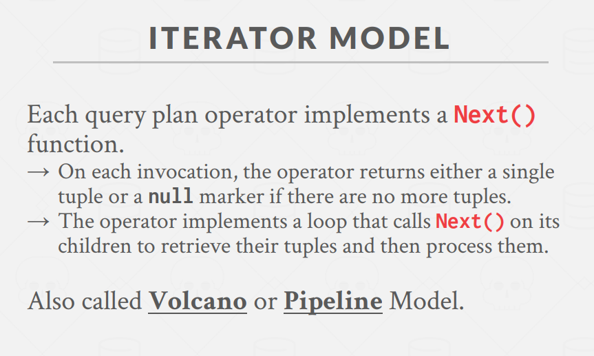
对于当前节点而言，通过对子节点调用 Next()
函数获取来自子节点的数据，对于子节点而言也是同理，整个过程是递归执行的。Next()
函数每次只传送一个
tuple，因此这可以保证整条路径上的各个节点一直处于
busy 的状态，这便是流水线思想；另一方面，由于只传送一个
tuple，数据量较小，因此不需要与磁盘进行读写
有一些 operator 会阻塞 block
在当前节点（join, order by, subqueries），直到它们的子节点发送了所有的数据。当它们接收完子节点的数据后，处理完一个便发送一个
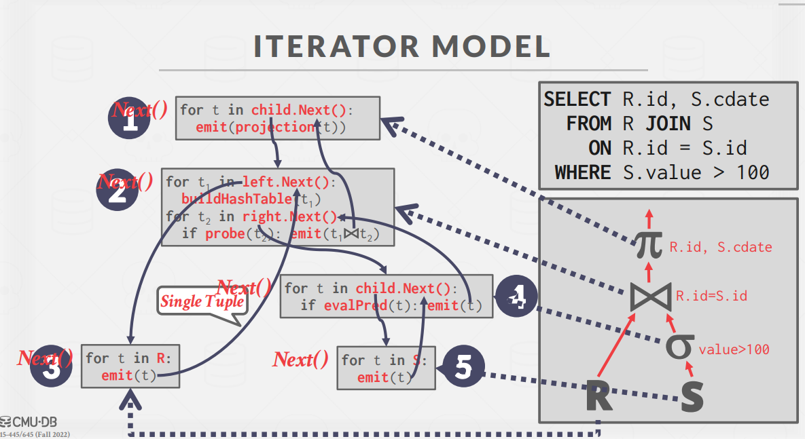
该模型对于输出的控制十分容易，如果只需要十个数据，那么最上层只要接收到十个数据后，便停止调用
Next() 函数，这样整个流水线便停了下来
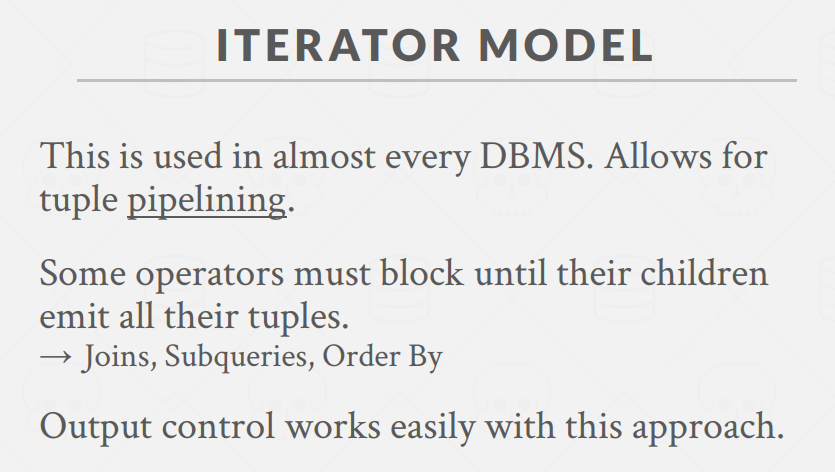
缺点：我一次只能执行一个 tuple
这会导致效率不高。因为我每次获取一个
tuple，可能会执行很多其余的操作，如果可以一次获取到多个
tuple，那么我们便可以摊销 amortize
那些多余开销的成本
Meterialization Model
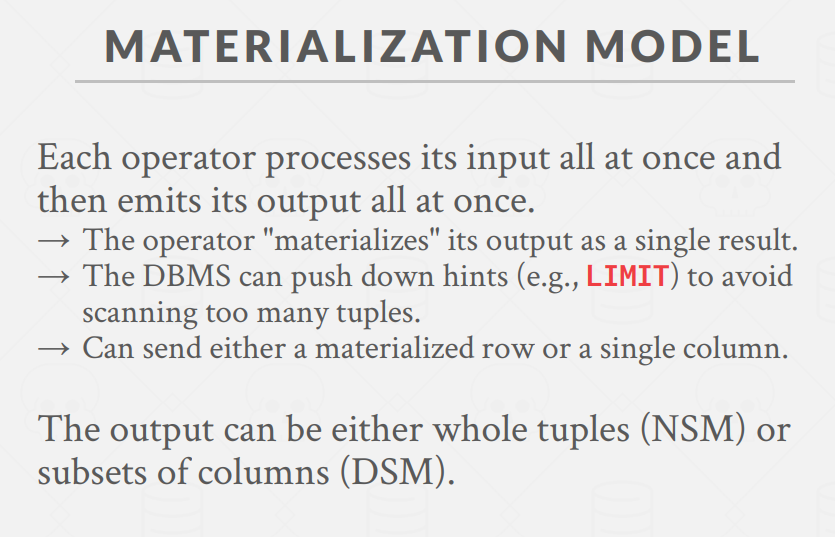
每个算子 operator
都会一次对所有的输入执行操作，然后再一次性将得到的输出发送到上层的节点中。如果存在对最终结果数量的约束，那么
DBMS 会向下传递该约束，以避免扫描过多的
tuple
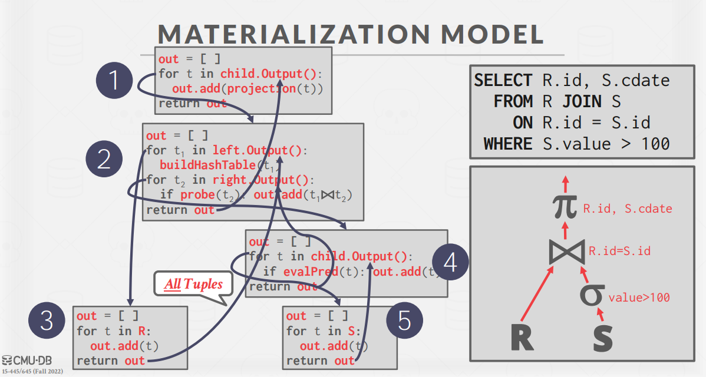
在整个流程中，我们不再是对子节点调用 Next()
函数，而是调用 Output()
函数，我们将会得到子节点的所有输出（也就是说，这会阻塞当前节点）
这种方式的函数调用会更少，因此相对应的开销也会更小。主要适应于
OLTP
类型的负载，因为这种情况下数据量不大。对于数据量大的情况，该模型会多次读写磁盘以保证有足够的空间来一次性传递所有的结果，因此这会导致性能上的开销
Vectorized Model
Iterator model 与 Meterialization model
实际上是两个极端：一个一次只发送一个
tuple，一个一次把所有的 tuple
全部发送，我们需要一个介于二者之间的模型
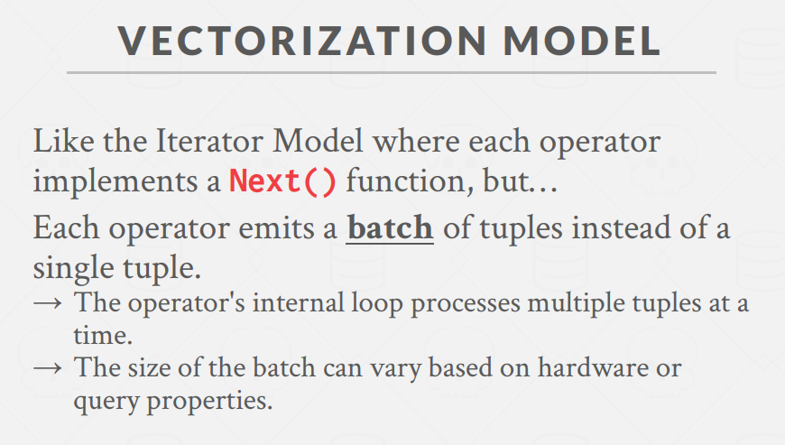
Vectorized model 同样也有 Next()
函数，该函数每次返回一批 batch
数据。由于一次返回一批数据，因此我们可以使用 SIMD
等向量指令来加速执行的过程
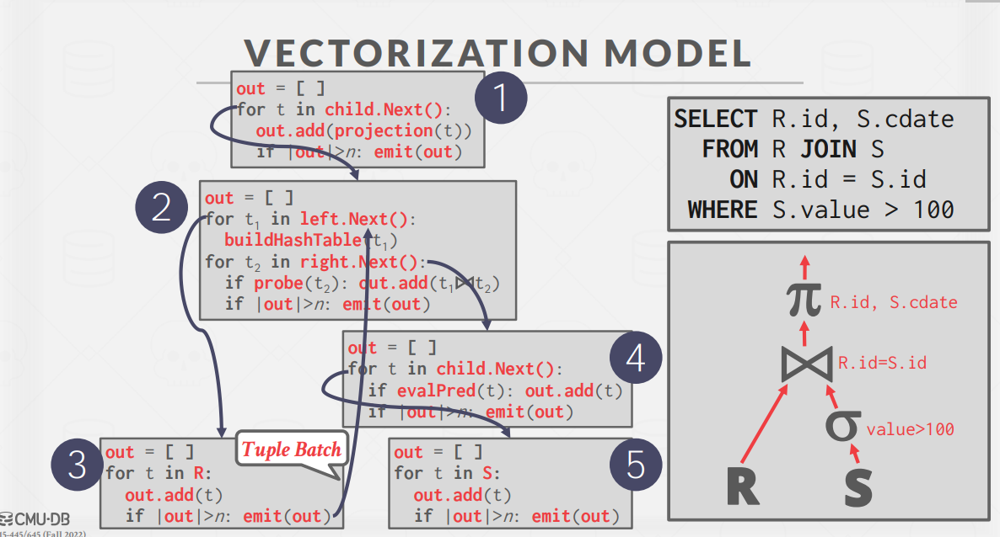
只要 out 中所含的 tuple 的个数大于 \(n\)，那么我们便可以向上发送这批
tuple，这里的 \(n\)
我们可以任意指定
该模型适合 OLAP
负载，因为它很大地降低了每次运算中函数调用的次数，并且我们可以使用
SIMD 等指令来加速每次对一批 tuple 的执行
Processing Direction
我们执行的方向有两种：自顶向下和自底向上。前者从根节点开始，从子节点提取数据，因此数据是以函数调用的形式进行传递的（也就是递归）；后者从叶节点开始，往父节点推送数据，这在流水线中更容易对
cache 做控制（我们只需要缓存一次数据，然后每次从
cache 中取即可）
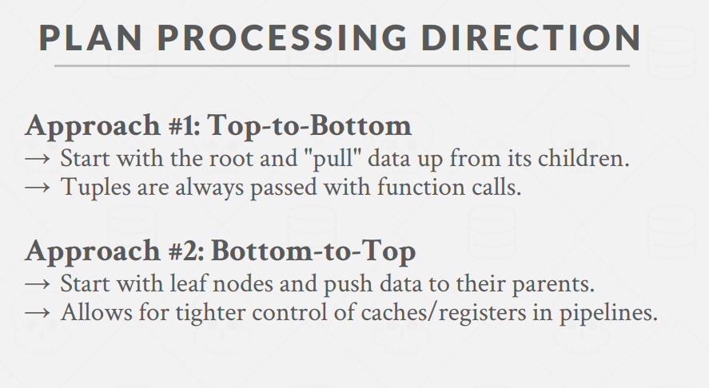
Access Methods
Access Method 是 DBMS
用于访问那些实际存储在表中数据的方式，主要有三种：
- Sequential scan
- Index scan
- Multi-index scan
Sequential Scan
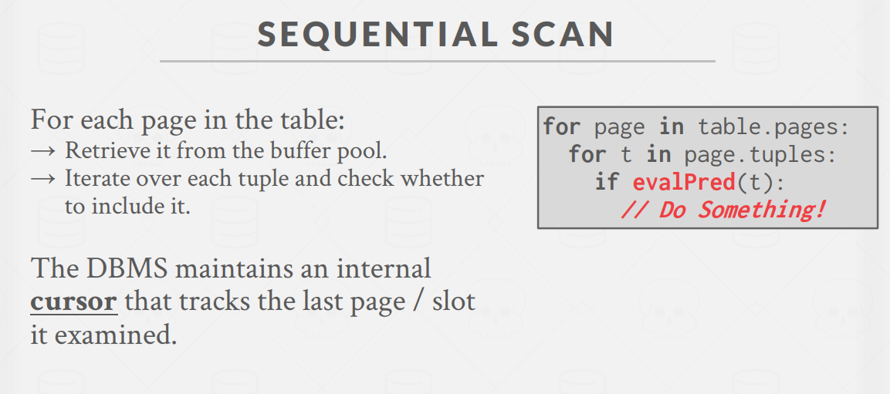
对于表中的每个 page，我们直接从 bpm
中获取，这样可以减少与磁盘的交互。我们遍历当前的
page，逐个检查该 tuple 是否满足我们设定的谓词
predicate。DBMS
需要维护一些本地变量来记录当前遍历的 page 以及在
page 当中的位置
Optimization: Data Skipping
Data Skipping 的措施有两种，分为有损和无损
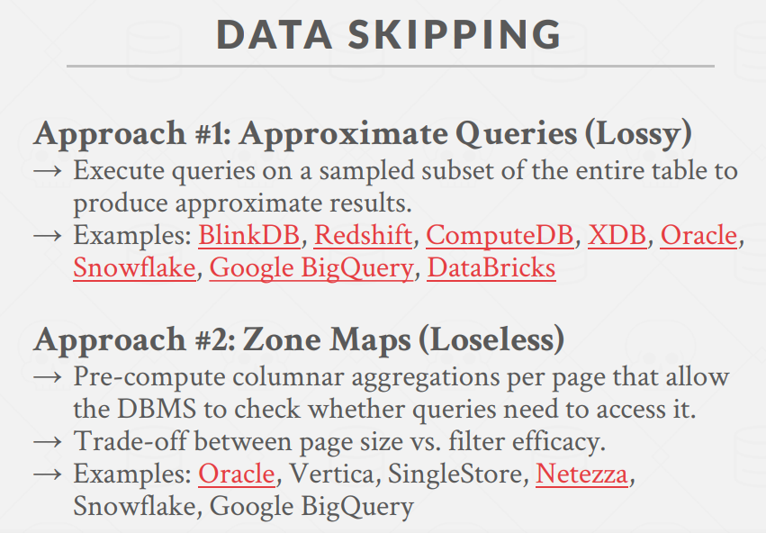
对于有损的方案，我们可以只获取原始表的一个子集，然后对该子集进行查询，进而得到近似的结果。这需要我们能够接收近似的结果这一前提
对于无损的方案，我们会在原始数据 original data
在计算出一个对应的 zone map，每次我们在扫描该
page 时可以先检查
zone map，进而确定是否需要扫描该
page
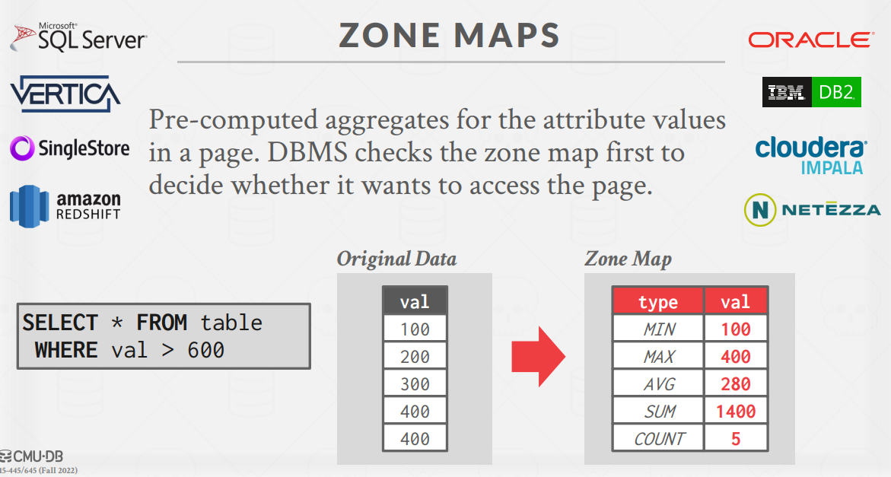
Index Scan
DBMS 需要确定该选择哪些 index 去找到
query plan 需要的那些
tuple，在这里，我们默认是 single index
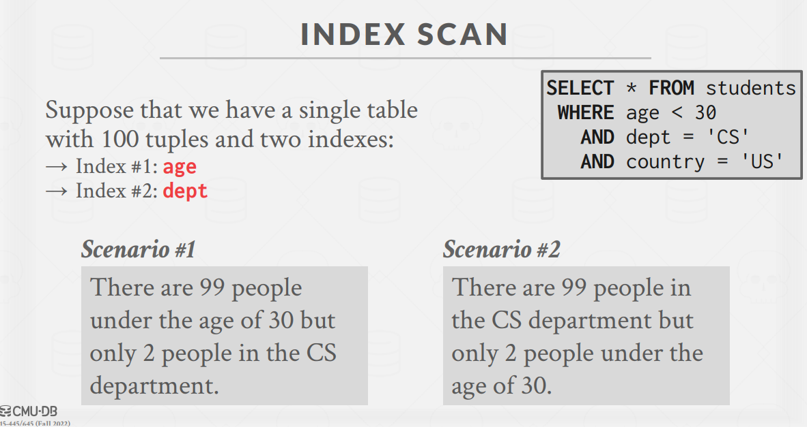
对于第一个，我们选择 dept 更好，因为所有人的
age
都满足条件，因此我们便不需要再做额外的判断了；对于第二个，以此类推
Multi-index Scan
如果我们可以使用多个 index
来加速查找，那么我们可以按照如下步骤执行：
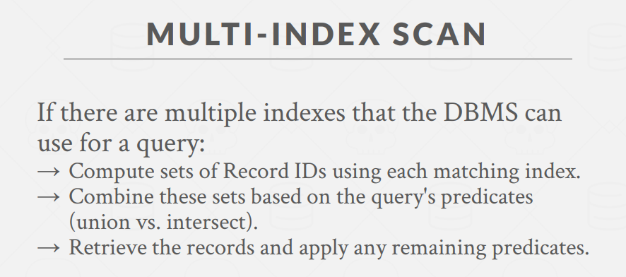
- 我们首先用匹配的
index去找到对应tuple的Record ID（也就是page id和slot num） - 然后我们依据谓词
predicate来对第一步得到的集合进行合取conjunction或者是析取disconjunction - 最后，我们用剩下的
predicate来对第二部得到的集合进行过滤
具体可以参考下面这个例子：
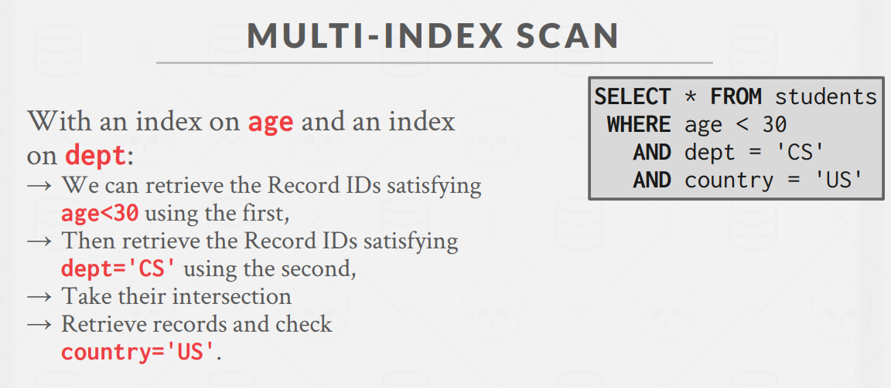
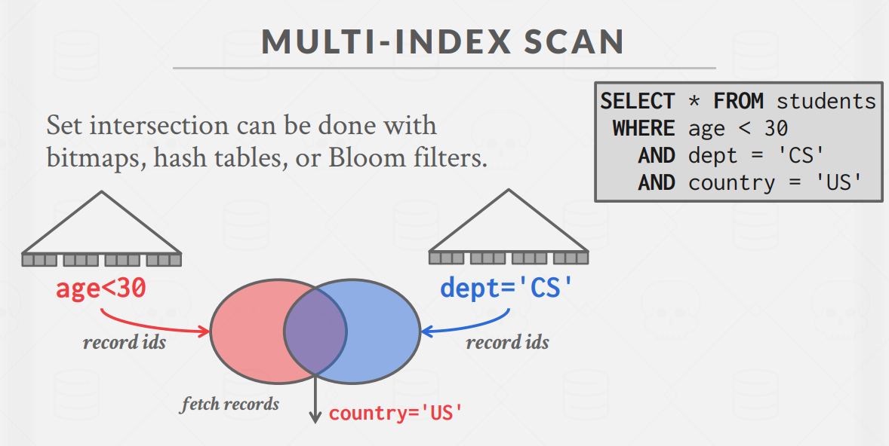
Modification Query
有一些查询操作会对原始的 table
进行修改，因此我们需要去修改原始的 table，维护对应的
index，以及检查是否满足 data constrain
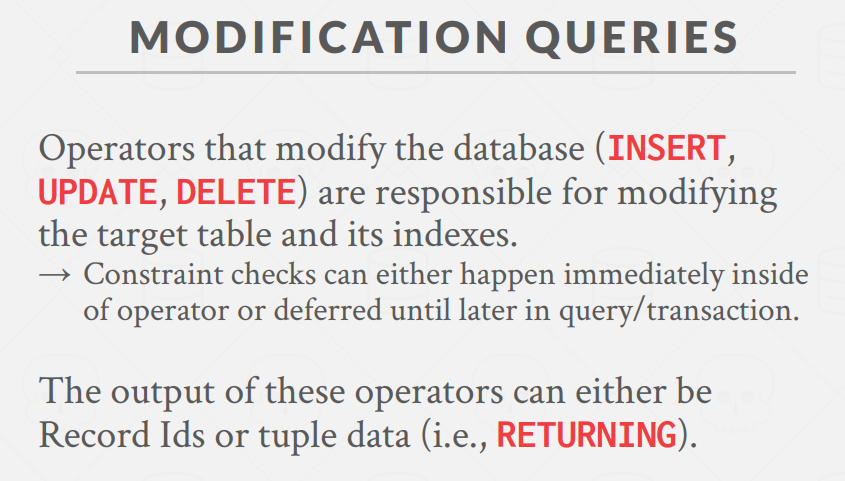
insert, update, delete 的具体执行方式如下：
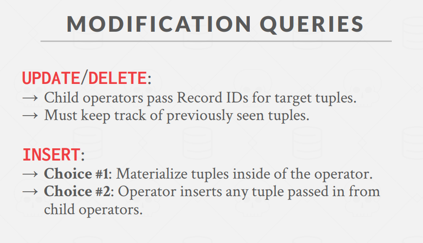
对于 update 和 delete，子算子
child operator 会将目标 tuple 的
RID 传递给当前算子，因此当前算子直接用 RID
去修改对应表中的内容即可
对于这两种操作，我们还需要记录之前执行过的数据，这样可以避免对同一个
tuple 执行多次操作 （Halloween Problem）
对于 insert 操作，有两种选择：
- 在算子
operator内部物化meterialize需要插入的tuple，然后直接插入 - 在子算子
child operator中完成物化，并将结果传入给专门执行插入操作的算子，并由该算子完成对index的维护
我们来考虑一下如果不记录之前的数据会造成什么问题：
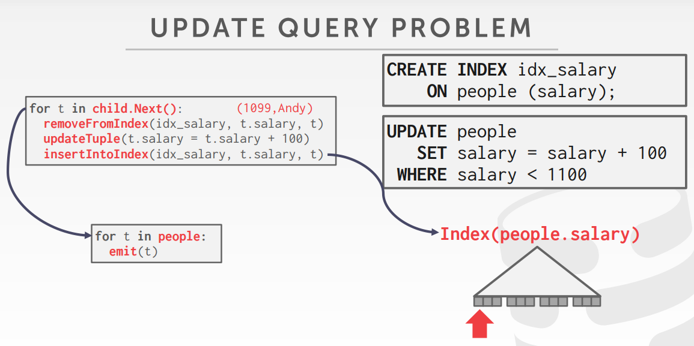
假设我们要让所有 salary 小于 \(1100\) 的都加上 \(100\)。如果前面我找到了一个
salary 为 \(999\)
的，那么我需要将它在 index 中删去，然后将 \(1099\) 重新加入到 index
中。由于 index 是有序的，因此这会被加入到当前光标
cursor 的右边。换句话说，我们在后面还会再次扫描到
\(1099\)
这个数据，然后再次将这个数据修改为 \(1199\)，这便会导致错误
Expression Evaluation
查询计划 query plan
可以被组织成一颗树的形式，树中的每个节点都是一些操作。在这些操作（主要是
where clause）中会有一些运算符，这些运算符本身也可以被解析为一棵树：
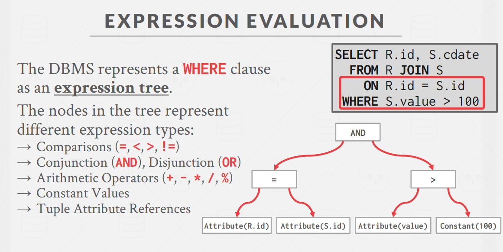
我们每次在计算该表达式时，都需要遍历整棵树，这会造成很大的性能开销。这个问题的优化是使用
just in time 编译优化
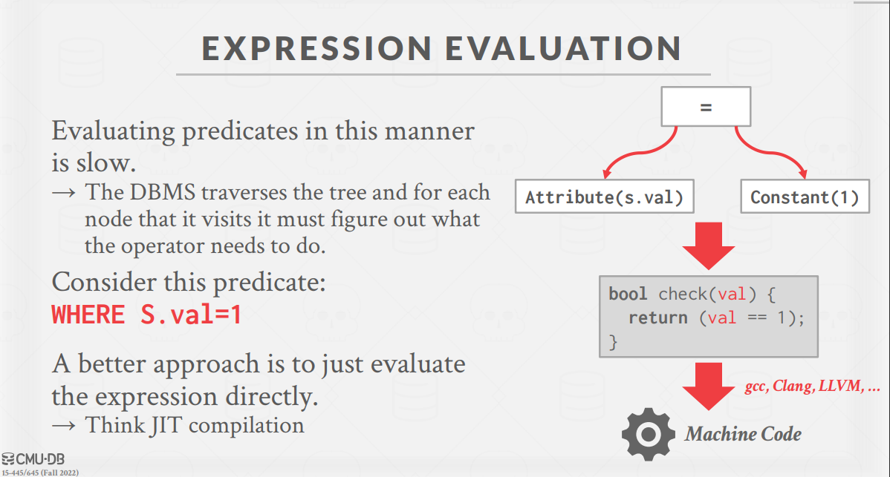
考虑一个等号节点 \(N\)，如果我们采取遍历树的形式看待，那么我们每次计算 \(N\) 时都需要将它的所有子节点都遍历一次。但实际上，我们可以将该节点编译为一个函数，然后每次需要遍历该节点的时候我们都去调用对应的函数，这会很大地提高效率（这么做的前提是，有一个子节点是常数）
在上面这个例子中，我们原本需要递归遍历三个节点（一共有三次函数调用），引入优化后我们只需要调用一次函数调用即可完成整个运算
Query Execution II
我们可以并发执行数据库中的查询语句，这将可以带来更高的吞吐量（单位时间内执行语句的个数）以及降低查询语句的执行延时（单条语句的执行时间）
并行 parallel 和分布 distributed
的相同点为：
- 通过分散数据库
database的资源resource来提升DBMS的执行效率 - 无论物理上是如何组织的，对于应用程序而言都只有一个逻辑上的数据库。换句话说，对于单个资源，无论是以并行组织的还是以分布组织的，
DBMS都需要返回相同的结果
注：这里的资源
resource是指CPU cores, CPU sockets, GPU, disk等硬件上的资源
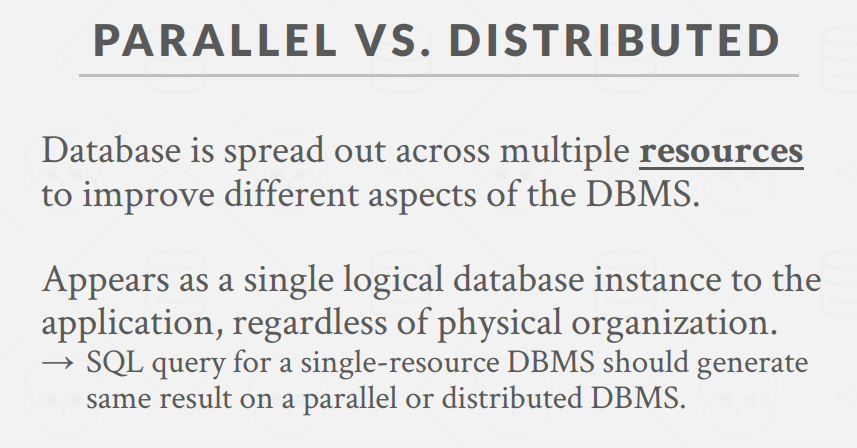
对于 Parallel 类型的 DBMS 而言：
- 资源
resource在物理上向邻近 - 资源之间的交互速度十分快速
- 不同资源之间的通信可以认为是廉价的
cheap和可靠的reliable
对于 Distributed 类型的 DBMS 而言：
- 资源
resource在物理上的距离可能十分遥远 - 资源之间的交互十分的缓慢
- 会有不同资源之间的交流开销以及信息的传递可能会失败
Process Model
Process Model 定义了 DBMS
该如何执行多个用户程序的并发请求；worker
是 DBMS 中的一个组件，用于实际去执行任务 task
并返回结果
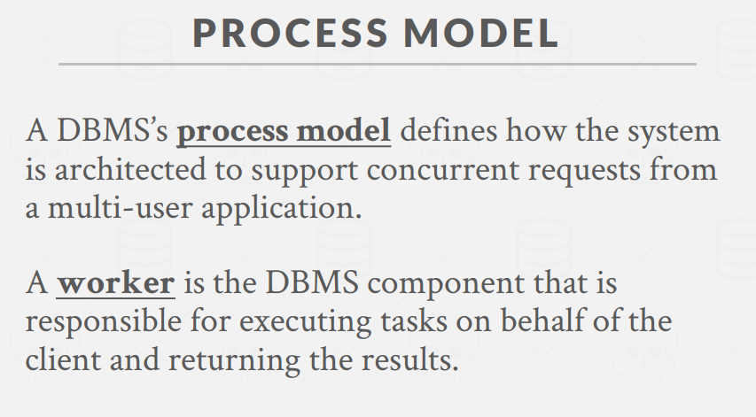
Process Model 主要有三个，分别是：
- Process per DBMS Worker
- Thread per DBMS Worker
- Embedded DBMS
Process per Worker
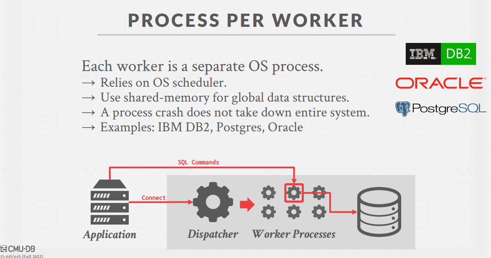
应用程序首先与调度者 dispatcher 进行通信，然后
dispatcher 会选择一个 worker process，之后由该
worker process 执行对应的操作并返回结果。这里的
worker process
实际上是一个操作系统中的进程，因此这取决于操作系统的调用。对于全局的数据它们会使用共享内存进行访问，并且一个进程崩溃不会导致整个系统的崩溃
Thread per Worker
相比于 Process per Worker，这么做的好处在于：
- 资源利用率更高：因为多线程实际上是在单个进程中共享内存的，因此它们可以很轻易地去共享数据以及相互通信；而不同的进程间的地址空间是独立的，因此需要单独分配一块空间来进行通信
- 上下文切换更快：线程在这方面的速度比进程更快，需要设置和保存的状态更少
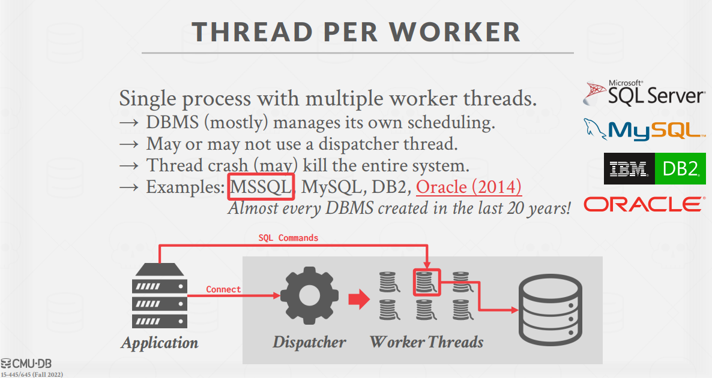
Embedded
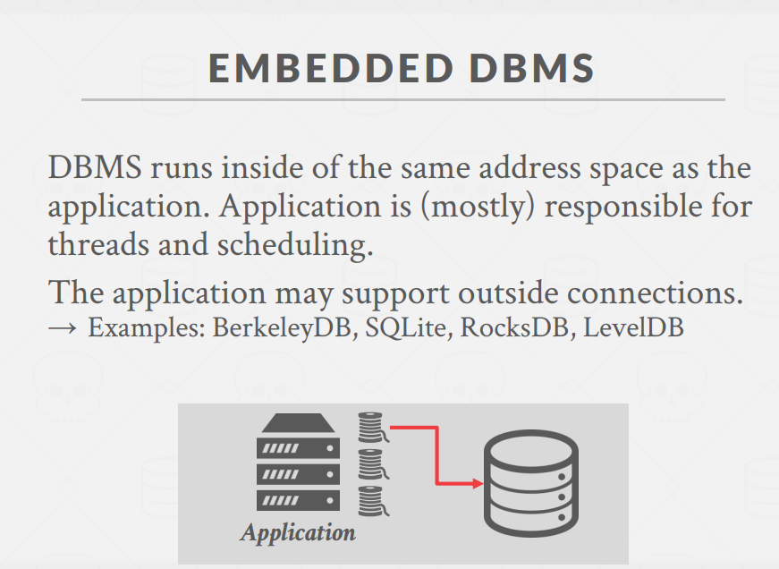
这种方式将 DBMS 嵌入到应用程序中，因此应用程序在
database
上自己建立线程去执行对应的任务，应用程序本身也可以对线程进行调度
Schedule
DBMS 的查询计划 query plan
需要包含以下内容
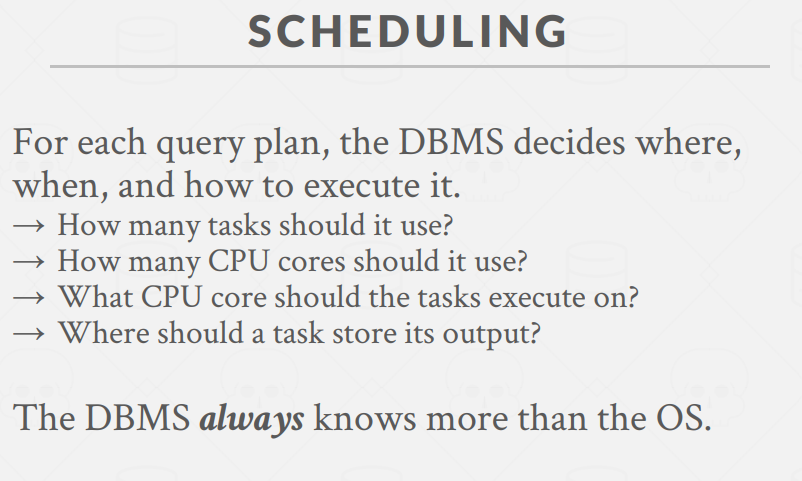
Inter-Query Parallelism
查询间并行
Inter-Query Parallelism，可以同时执行多个不同的查询，这可以增加吞吐量
throughput 和降低查询延迟 latency
如果所有的查询都是 read-only
的，那么这十分的容易，因为这不会修改 database
的状态。但如果多个线程会同时更新 database
的数据，这便会造成问题。我们将在 Concurrency Control
中讨论这个问题
Intra-Query Parallelism
查询内并行
Intra-Query Parallelism，可以使单个查询内的多个算子
operator
同时执行，这可以提高单个查询的速度。我们可以将单个查询内的所有算子看成一个
producer & consumer
模型，对于一个算子而言，底层的提供数据，上层的提取数据，这种思想类似于流水线
pipeline
对于每个算子
operator，都有一个对应的并行版本，其实现思路有两种：
- 所有的线程共同去操作同一个共享数据
- 将数据分块，然后各个块由单独的线程操作
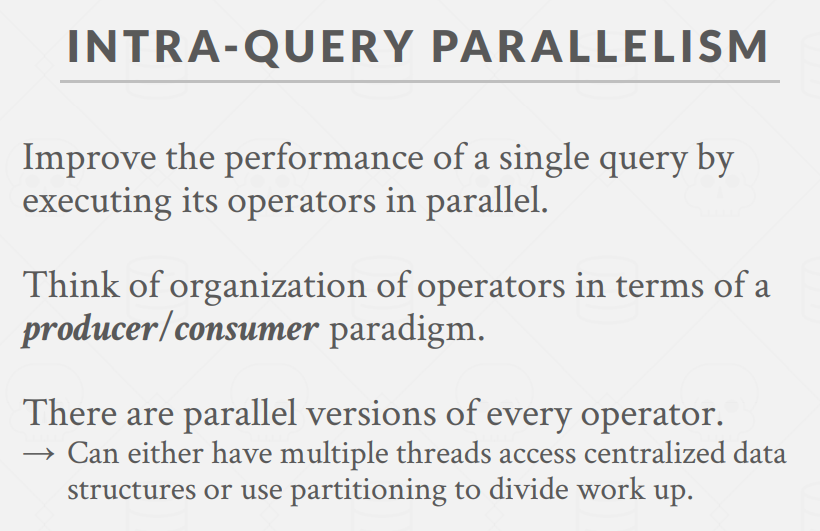
考虑一个 grace hash join 的例子，我们将两个
table 执行完 hash 过后，对于
hash table 当中的每一行而言，我们都可以使用一个
worker
来并行地对该行进行操作，最后我们将结果聚集起来便可
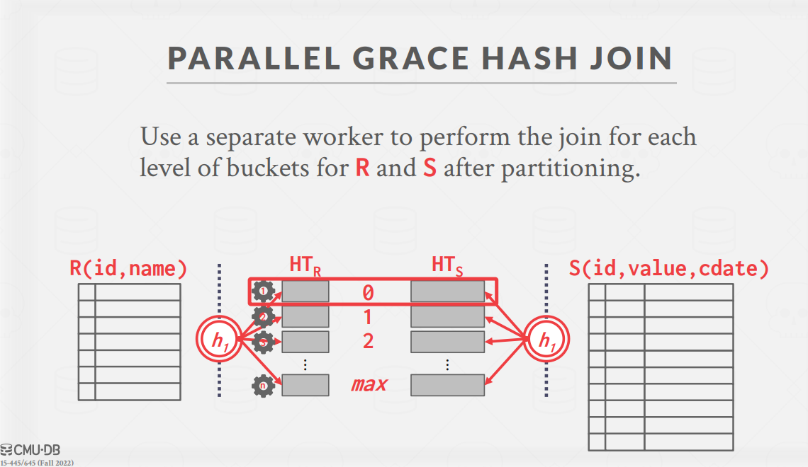
我们可以通过并行执行多个 operators 来实现
Intra-Query，分为水平方向 horizonal 和垂直方向
vertical
- Approach #1: Intra-Operator (Horizonal)
- Approach #2: Inter-Operator (Vertical)
Intra-Operator (Horizonal)
我们可以将 operators 划分为多个独立的
fragments，这些 fragments
用于对数据的子集执行同一个函数；之后，通过
exchange operator 来将这些结果合并 coalesce
或者分裂 split
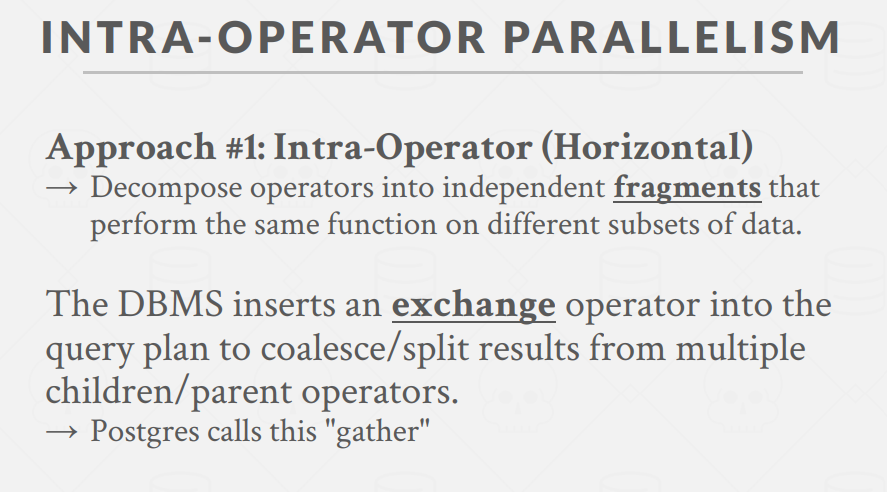
对于当前 operator
而言，我们可以创建多个线程，使每个线程只对所有数据的一部分进行操作，之后我们再通过
exchange operator 将结果进行 coalesce
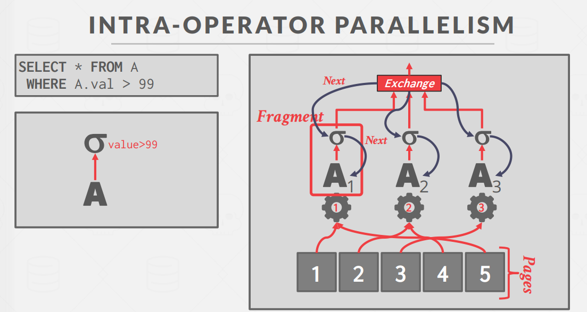
Exchange operator 的类型如下：
- Gather: multiple input and single output
- Distribute: Single input and multiple output
- Repartition: Multiple input and multiple output
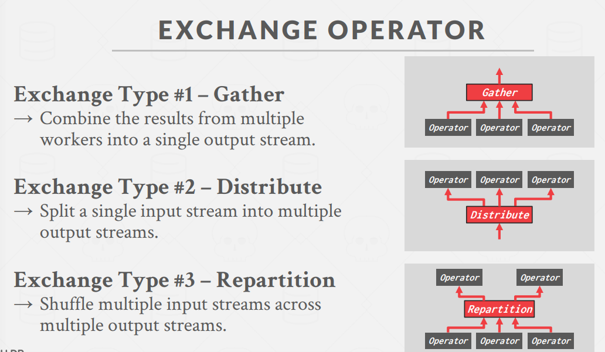
下面这个例子很好地说明了 exchange 的作用。在对 \(A\) 建立完 hash table
后，我们将得到的三个 hash table 合并成一个；然后 \(B\) 在用自己得到的结果在这个合并后的
hash table 中进行
probe；之后我们会得到三个不同的集合，最后再用
exchange operator 聚合成一个并将其输出
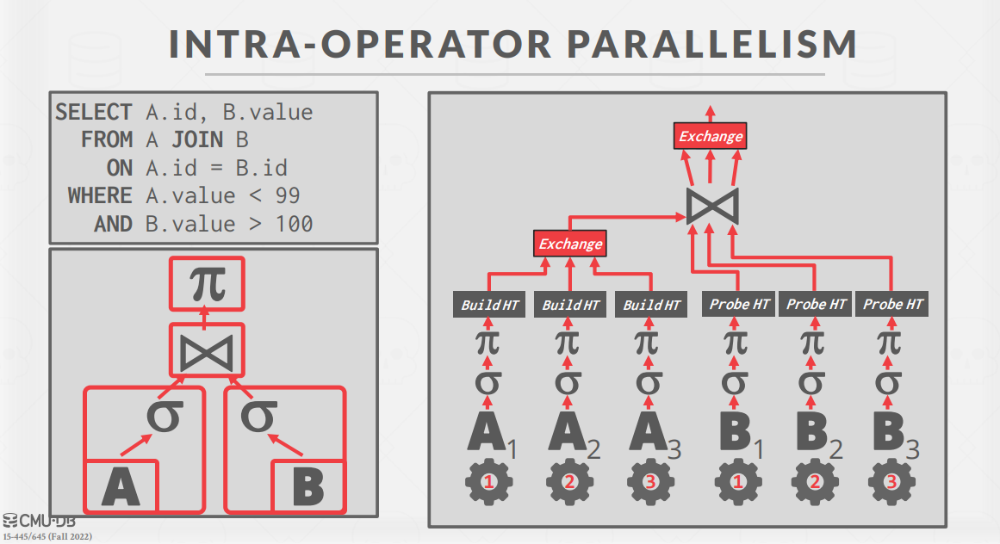
Inter-Operator (Vertical)
我们可以将每个 operator 都用一个 thread
或者 worker 进行控制，那么我们便可以同时执行多个
operator，这与 pipeline 思想十分相近
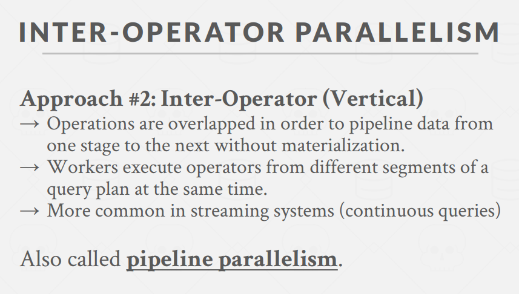
可以参考下图，多个 operators
之间可以并发地执行，然后数据在它们之间不断流动
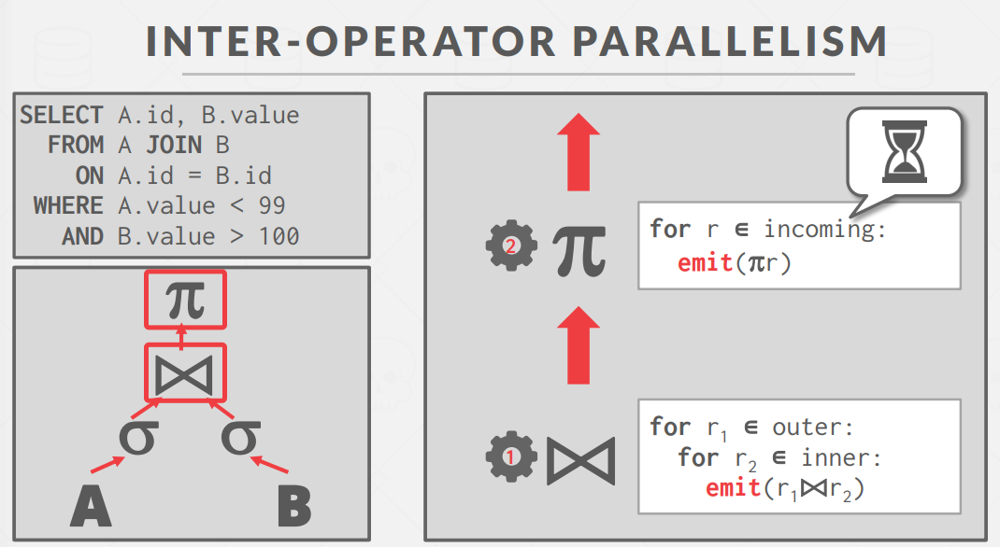
Bushy
这是 Intra-Operator 和 Inter-Operator
的融合。实际上，Intra-Operator
的意思是算子内并行，Inter-Operator
的意思是算子间并行，这也就分别对应水平方向和垂直方向
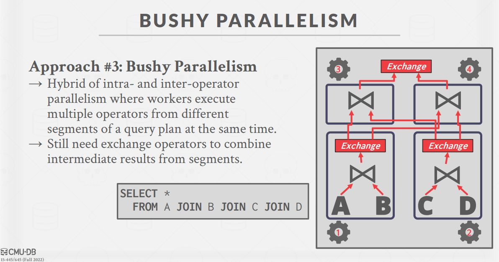
I/O Parallelism
我们到目前为止讨论的并行性都是基于 CPU
的，但如果我们的瓶颈 bottleneck
处在磁盘的读写上，那么我们哪怕加入更大的 CPU
并行也不会使得效率得到更大的提升。因此，我们真正需要的是
I/O Parallelism：
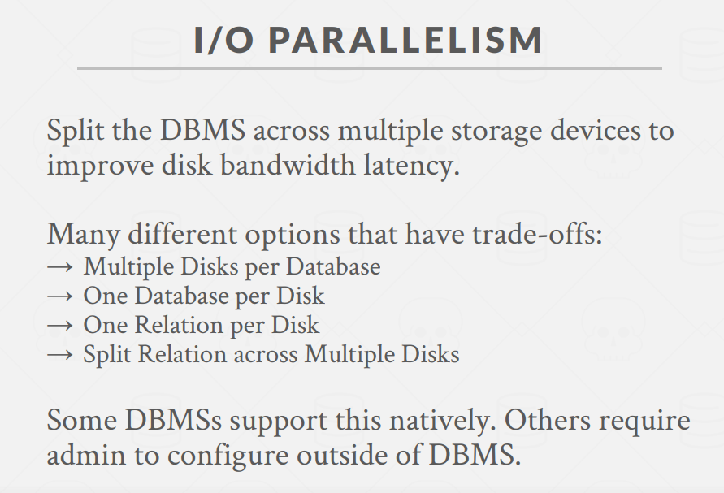
我们可以将 DBMS
划分为多个存储设备，这样子我们可以同时对多个设备进行读取，可以提升磁盘带宽
disk bandwidth。实现的方法有很多：
- Multiple Disks per Database
- One Database per Disk
- One Relation per Disk
- Split Relation across Multiple Disks
但无论我们使用那种方式，存储设备都需要保证对 DBMS
是透明的 transparent
RAID
我们可以使用不同等级的 RAID 来实现 I/O
并行：
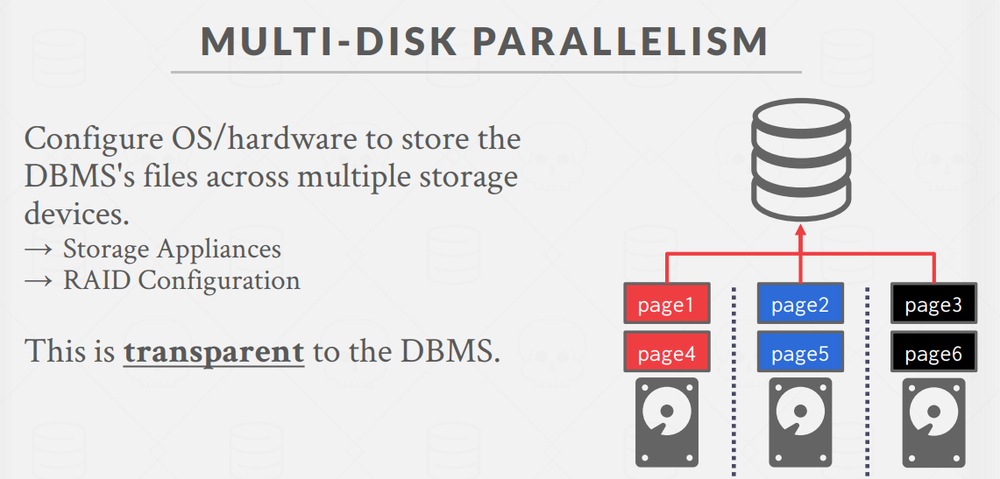
DBMS Partitioning
我们可以将数据库文件 database
划分为不同的分区，然后存储在磁盘当中的不同位置。唯一需要注意的是我们需要共享
recorvery log 以便保证数据的完整性
integrity
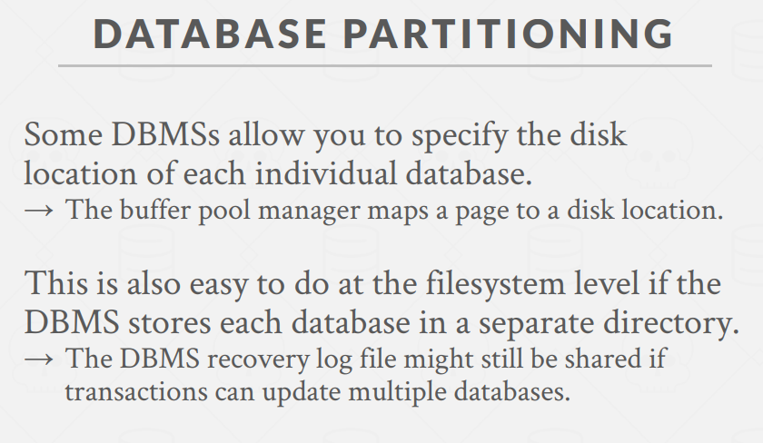
Table Partitioning
我们可以将单个 table
进行分块，存储在磁盘的不同位置，这同样可以提升 I/O
的并行性。与上面不同的是，上面是将整个 database
文件进行分块，这个是将单个 table
进行分块，二者操作的对象不同
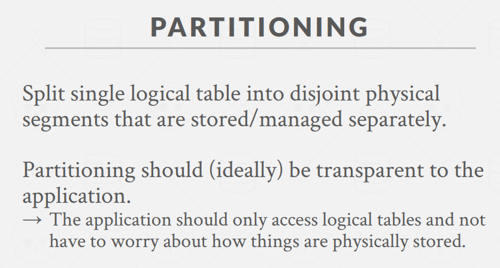
Query Plan & Optimization
由于 SQL 语句是 declarative，也就是
SQL 语句只会告诉 DBMS
需要什么结果，但没有指定该如何得到这个结果。因此，DBMS
需要将 SQL 语句翻译为一个可执行的查询计划
executable query plan。但对于一个执行计划而言，我们有非常多的方式去执行对应的算子
operators，因此我们需要从这些 plan
中寻找一个最优的，这便是 optimizer 的工作
Logical plan 是一个与 query
的等价关系代数表达式
relational algobra expression，也就是关系代数级别的；physical plan
用于定义该如何实际执行每个 operators
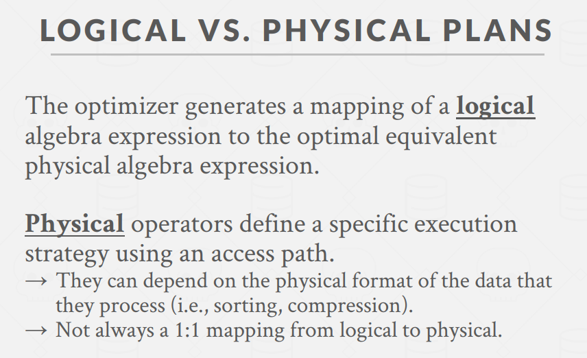
Architecture
DBMS 执行一个 query plan
的整体架构如下：
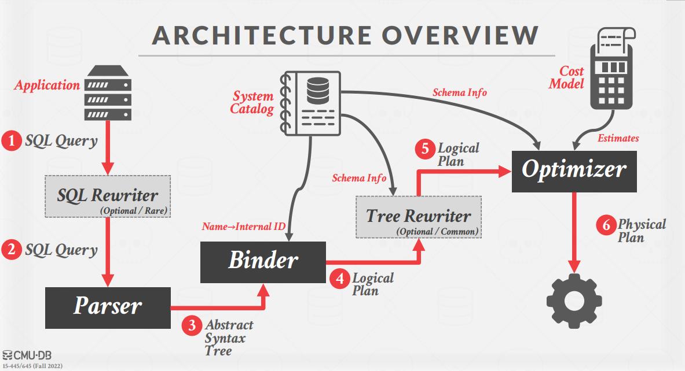
SQL Rewriter会将一条SQL语句重写为不同的格式Parser会将SQL语句解析并构建一颗抽象语法树abstract syntax treeBinder会先查询system catalog，将syntax tree中的名称绑定bind到系统内部的标识符internal identifierTree Rewriter会在logical plan中加入更多的schema infoOptimizer会在得到的logical plan中，选择执行效率最高的那个，最后交由执行引擎执行physical plan
Optimizer 的实现方式有两种：
- Approach 1#: Heuristic / Rule
- Approach 2#: Cost-based Search
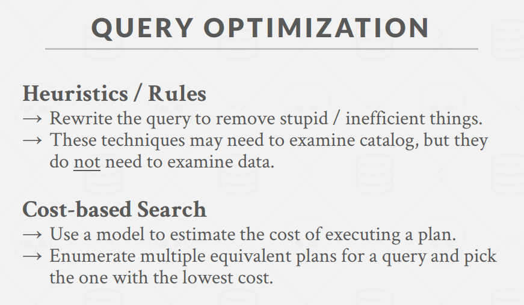
Heuristic / Rule
基于启发式 heuristic 的 optimizer
的设计需要注意的点如下：
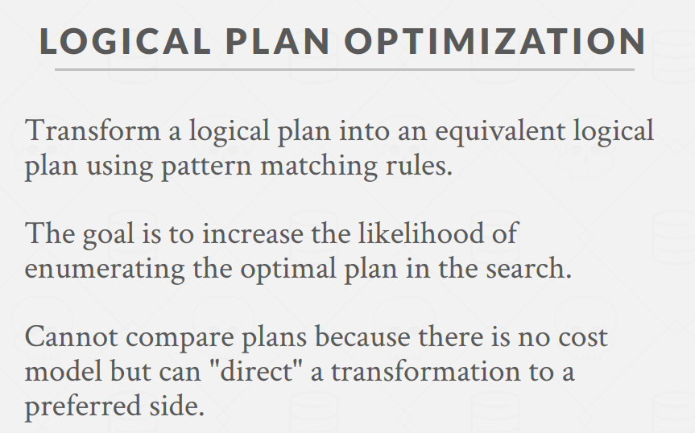
我们通过使用一些匹配的 patten 来将输入的
logical plan 转化成一个等价的
logical plan。由于缺少
cost model，因此我们不会比较不同的
logical plan
之间的性能差异，但我们可以引导往我们希望的方向进行转化。Heuristic
的目标是增加在搜索中枚举到最优 plan 的可能性
Heuristic
Heuristic 具体的实现方法有四个：
- Split Conjunctive Predicates
- Predicate Pushdown
- Replace Cartesian Products with Joins
- Projection Pushdown
Split Conjunctive Predicates
我们可以将一个完整的、复杂的谓词逻辑 split
成多个等价的、简单的谓词逻辑
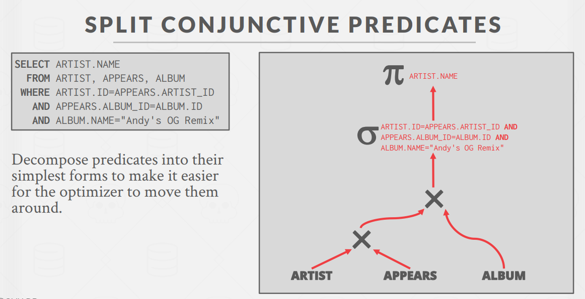
split 后结果如下：
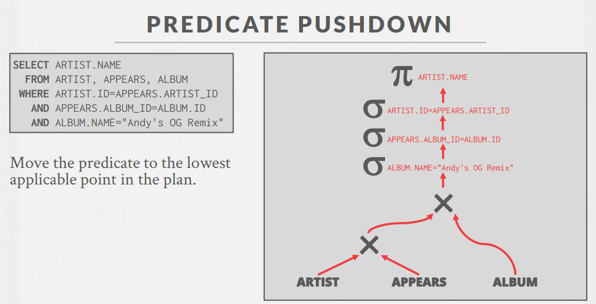
Predicate Pushdown
我们可以将 predicate
下移，这样可以提前过滤掉不需要的数据
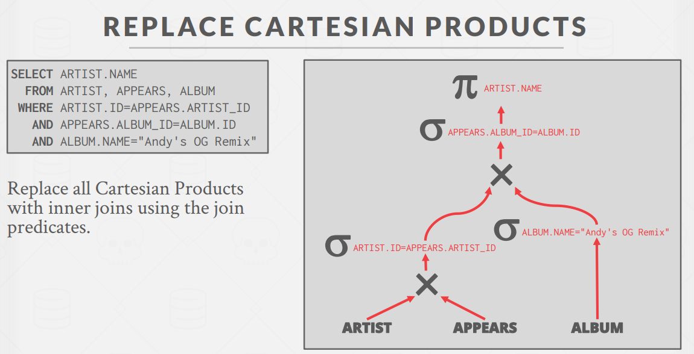
Replace Cartesian Product
我们可以将笛卡尔积 Cartesian Product 替换为
join
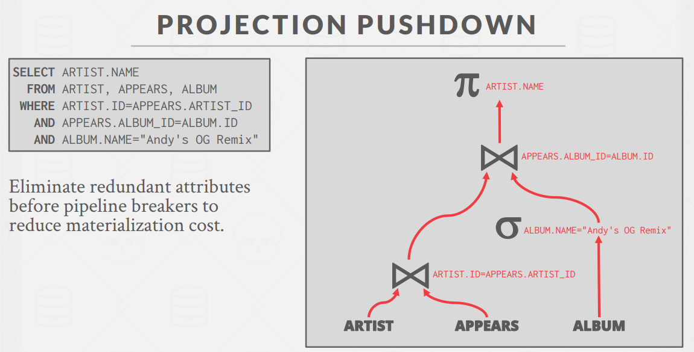
原先我们是对两个 table
的笛卡尔积的结果进行过滤，我们可以使用 join
来替换掉笛卡尔积
Projection Pushdown
我们可以在提取 table
之前，就将我们不需要的数据过滤掉
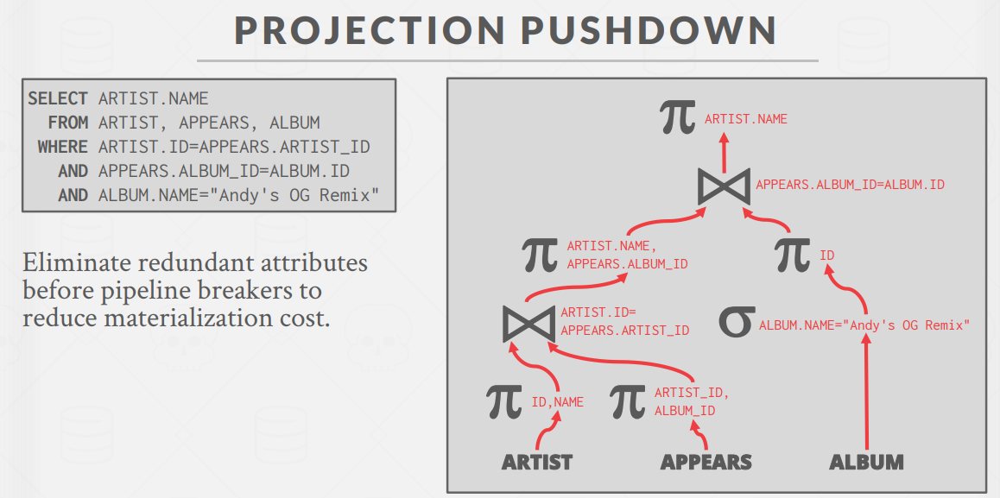
Nested Sub-query
对于 nested sub-query 的优化，主要有三个：
- Rewrite Nested Sub-queries
- Decomposing Queries
- Rewrite Expression
Rewrite Nested Sub-queries
DBMS 会将 where clause 中的
sub-query
视为函数，需要进行判断时都会执行该函数并对返回结果进行判断
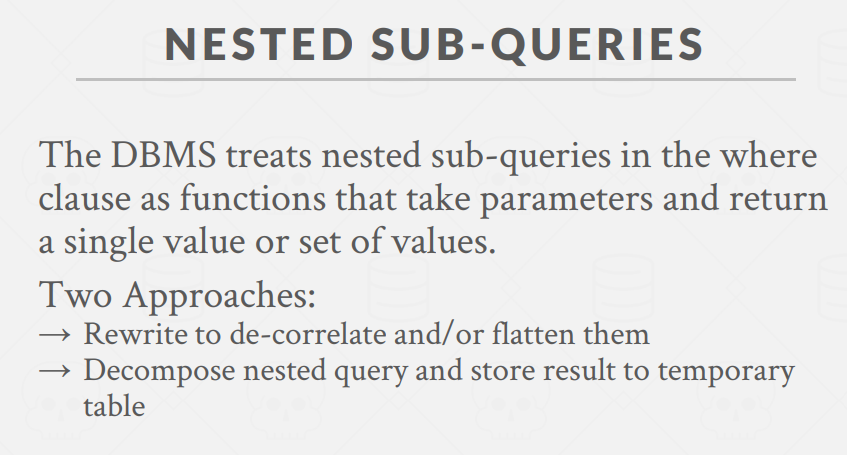
我们要么将它们重写，以得到两个不相关的查询；要么将
nested sub-query 分开，并将其暂时存储在一个
table 中
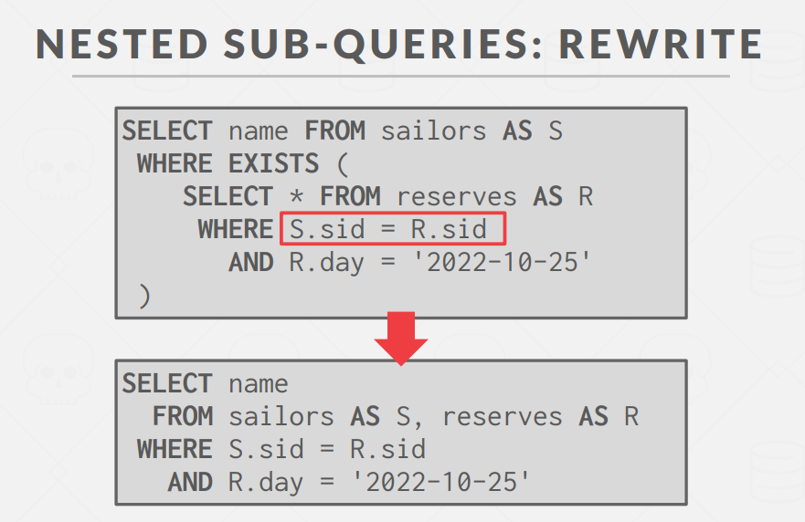
原始查询的含义是，只要 \(R\) 中的
sid 与 \(S\) 中的
sid 相同，那么 where clause 为
true，此时便输出 \(S\)
中该 tuple 的 name
那么实际上这等价于下面的 SQL
语句，这样子我们只需要执行一次 Cartesian Product
即可，不需要反复执行 sub-query
Decomposing Query
我们可以将 sub-query 与原始 query
拆分开，单独计算出这个结果，然后在需要的时候直接赋值即可
可以参考下面这个例子：
这里我们将内部的子查询单独计算出来，然后每次需要的时候直接用该常数进行比较即可
Rewrite Expression
我们可以将表达式中的一些冗余的条件进行重新，将其变为更简洁的形式
我们可以看几个例子：
- 对
predicate进行重写
1 | |
- 对
predicate进行合并
1 | |
Summary
实际上，基于启发式 heuristic 设计的
optimizer 主要是将输入的 logical plan
转化成另一个效率更高的
logical plan，这个过程中我们会应用上述的一些技巧来进行转化
Cost-based Search
基于代价搜索 Cost-based Search 设计的
optimizer 会利用不同的代价模型 cost model
去预测不同的 logical plan
之间的开销，然后选择性能最好的那个
由于我们不可能每次都去执行这些 logical plan，因此
DBMS 需要一种方式去得到那些信息（也就是该
logical plan 的开销如何）
Cost-based model 需要考虑三种不同的代价：
我们不可能实际去执行每个 query plan 来得到不同
plan 的代价，DBMS 会在内部维护一些关于
table, attribute, index 的统计信息
statistics，然后通过这些 statistic 去估计不同
plan 的代价。DBMS 会在后台自动维护这些
statistic，我们也可以手动去更新：
Derivable Statistic
这里给出我们衡量代价的标准
Selectivity Cardinarity 用于去衡量在当前
prodicate 逻辑下，会有多少 tuple 会被选择
对于 Relation \(R\)，DBMS 会维护以下信息：
- \(N_R\)：\(R\) 中
tuple的个数 - \(V(A,R)\)：\(R\) 中
attribute\(A\) 有多少个不同的个数 - \(A_{max},A_{min}\)：
attribute\(A\) 的最大值与最小值
这里我们会假设数据分布是均匀的
uniformity，每个数据出现的次数与其他数据相同
这种方式对于简单的 equality predicate
可以很轻易地衡量对应的损耗，但对于复杂化的
predicate，就无法衡量了（对于范围这种情况我们无法直接得到结果）
Selectivity
因此，我们在此引入 selectivity 这个概念，用于去计算对于
predicate 给定的情况，满足约束的 tuple
的分数
我们会使用一些公式对 cost
进行计算，不同的表达式会有不同的公式：
Single Value
对于单个值的衡量，我们可以直接通过计算 \(SC(p)/N_R\) 得到：
\[ sel(Predicate)=\frac{SC(P)}{N_R} \]
Range Value
对于范围的衡量，我们可以计算其出现的概率：
\[ sel(A\ge a) = \frac{A_{max}-a+d}{A_{max}-A_{min}+1} \]
Negation Value
对于 negation query 的情况，我们用 \(1\) 减去该 prodicate
对应的值即可：
\[ sel(not\ P)=1-sel(P) \]
Conjunction & Disjunction
对于 conjunction，我们会假设两个 predicate
相互独立，因此其析取 conjunction 的结果就是两个谓词的 \(sel\) 相乘：
\[ sel(P_1\wedge P_2)=sel(P_1)\cdot sel(P_2) \]
对于 disjunction，我们同样假设两个
predicate 相互独立，因此其合取 disjunction
的结果为两个谓词相加再减去其析取的结果：
\[ sel(P_1\vee P_2)=sel(P_1)+sel(P_2)-sel(P_1\wedge P_2) \]
Estimation for Join
上述我们讨论的都是关于单个谓词的衡量标准，也就是使用基数
cardinality 去计算每个
attribute，然后用该计算结果进行衡量该
predicate 的损耗
但对于 join
操作，这种方式无法很好地估计其结果集的大小，因此我们需要一种能够衡量
join 操作的标准
如果 relation \(R\) 与
relation \(S\) 的公共
attribute 为 \(A\)，那么：
- 对于 \(R\) 而言，最终结果集中所含
\(A\) 的
tuple可以衡量为：
\[ \frac{N_R\cdot N_S}{V(A,R)} \]
- 对于 \(S\) 而言，最终结果集中所含
\(A\) 的
tuple可以衡量为：
\[ \frac{N_R\cdot N_S}{V(A,S)} \]
因此，总体上我们可以使用以下公式进行衡量：
\[ \frac{N_R\cdot N_S}{V(A,S)\cdot V(A,R)} \]
这条公式依赖于以下三条假设：
- 数据均匀分布
- 谓词
predicate相互独立 - 满足容斥定理
inclusion principle
Histogram
在实际情况下，我们不会有如此理想的假设，因此我们需要一些额外的方式去衡量每种操作的代价
Equi-Width Histogram
我们引入等宽直方图 equi-width histogram
来衡量不同操作的代价：
我们将原始数据的每个 key
所出现的次数统计出来，可以得到下图
在这里，我们有 \(15\) 个
key，每个 key 假设 \(32\ bits\)，因此总共为 \(60\ bytes\)
我们将相同范围内的 key 划分一个
bucket，然后将同一个 bucket 内的
key 出现的次数都相加起来，那么这样可以减小存储的压力：
这样子，只要 key
处于同一个范围，我们就用这个范围对应的值当作是该 key
所出现的次数。例如，对于 key 为 \(7,8,9\) 的情况，我们都用 \(15\) 来代替其所出现的次数
Equi-Depth Histogram
这种方法有一个弊端是，对于同一个范围内的
key，会出现方差过大导致衡量误差过大的情况。例如，如果在范围
\([1,3]\) 中，key 为 \(1,2\) 的出现次数都为零，但 \(3\) 的出现次数为 \(10\)，这样当我们去衡量 key 为
\(1,2\) 时便会出现很大的偏差
因此我们需要引入等深直方图 equi-depth histogram：
我们每个 bucket 所含有不同的 key
不再相同，我们希望在最终得到的直方图中，每个柱子的高度大致相同，因此我们的
bucket 的取值不再固定
这么做的好处是，我们通过不固定 bucket 所跨越的
key
的数量，这样子可以很好的消除因为方差过大导致的衡量误差的影响
Sampling
我们可以对原始数据进行采样 sampling，得到
table sample，然后我们依据该 table sample
来对不同操作的损耗进行衡量
在生成 table sample 时，我们不必将整个
table
都扫描，而是可以跳着扫描，这样子可以减少扫描的次数（在下面的例子中，我们是每隔一个扫描一条
tuple）
Query Optimization
在拥有了具体的
cost model，我们可以大致衡量不同操作的性能，因此我们可以通过引入
cost model 来衡量不同 logical plan
的性能如何
Single-Relation
对于单表查询 single relation query
的情况，optimizer 会选择最佳的访问方式
access method，然后通过使用一些简单的启发式规则
heuristic 来对 logical plan
进行优化。我们不需要引入额外的消耗模型 cost model
去衡量不同 logical plan 的性能
这里的原因如下：
OLTP
类型的查询很容易优化的原因在于它们是能确定搜索参数的
search argument able。换句话说，我们可以很容易地去找到一个最优的
index 去执行该 logical plan
在上图中，id 为
primary key，因此我们直接用对应的索引就可以快速找到对应的值
Multi-Relation
在多个 logical plan
中，我们会严格限制搜索空间，并选择那些满足条件的
plan，之后再对它们进行 cost 衡量
对于多个 table 的查询计划
query plan，由于一般都涉及到
cartesian product，因此我们可以将其转化为 join
操作。更进一步，我们可以对得到的 logical plan
中只选择左深树 left-deep tree
在上图中，我们会选择最左边那个
这么做的原因在于，左深树可以很好的适应 pipeline
的执行模型 process model。换句话说，如果我们选择使用
vocano model 的话，下一层算子 operator
的结果一旦产生，可以马上作为上一层
operator 的输入
关于为什么选择左深树这个问题，原因如下：
除了选择 left-deep tree 外，DBMS
还会进行枚举不同的 logical plan
- 枚举不同的
join顺序 - 枚举不同的
operator - 枚举不同的访问路径
我们可以用动态规划去得到一条最优的路径（损耗最小）
在上图中，我们选择两条消耗最低的：
重复这个过程：
同样选择两条 cost 最小的：
最终得到的结果如下：
Candidate Plan
下面给出一个通过枚举不同 join
顺序、operator 以及访问路径的例子
- Step #1:
首先枚举 join 的顺序，需要保证都是
left deep tree
- Step #2:
然后是对每个 operator 进行枚举，进而得到消耗最小的
operator
- Step #3:
最好对访问方式 access method 进行枚举
Conclusion
- 尽可能早的对数据进行过滤
- 选择不同的
cost modelSelectivityHistogramSampling
- 利用动态规划、枚举等方式确定
logical plan